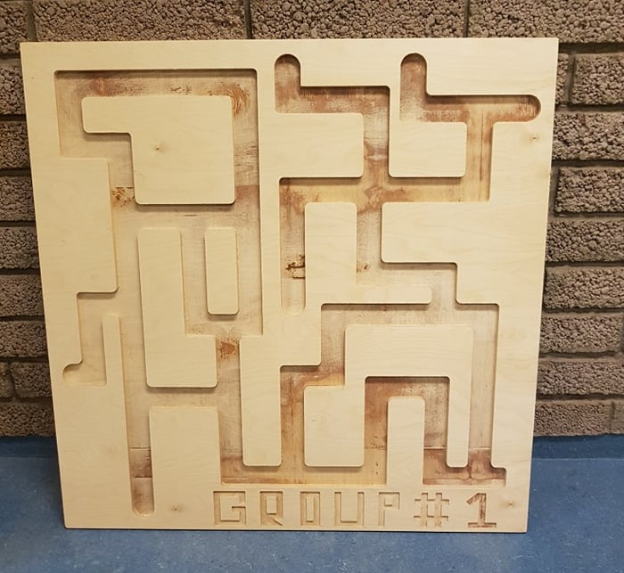

Make something big
This project is the first part of 3 in the final project in the course Manufacturing processes (VÉL403G). In this part, we had to make something big out of wood using a machine for milling. The constrains that we were given, were those that the material was 1,5*1,5 meters while the thickness could be 12, 18 or 21 mm. we decided to use 21mm thickness.
The beginning
The first thing that we had to do was to come up with an idea for an object do make. We were having some issues with ideas until one member of our team remembered a toy thad he had when he was a kid, that toy was called "The BRIO Labyrinth". We thought that this toy would be an amazing object to make, but we wanted to do something different. We wanted to make a labyrinth similar to that toy but make some changes to it, most of all we wanted to make it HUGE.

Since we had all used Fusion360 before in previous projects, we decided to make the object in the program Fusion360.
We also had to use a program called Vcarve to prepare the scetch that we make in Fusion360 for the milling machine.
Fusion 360
We started off by making a 1*1 meter rectangle and extruding that rectangle 21mm. Then we were left with the following.
After that, we designed the labyrinth that we wanted to have on our object. That was made by creating a new sketch with the path that we wanted to have.
The next thing that we had to to was to extrude the path 15mm into the rectangle that we had created. Now we were left with the following object.
Now we had made a nice path but we were not finished yet, we wanted to brand this object. We decided to call our brand "GROUP#1" after our group in the course. We created the following scetch on the rectangle.

We decided to extrude our brand logo 5mm into the rectangle and after that, we were left with the following.
Now that the design had been finished, we wanted to see how it would be made with a milling machine. We watched this video and learned how to make a simulation of the milling process. We were left with the following video and we were really happy with the results.
Now we just had to export our files from Fusion360 so that we can later upload them into the program Vcarve to prepare them for the milling machine.
Vcarve
Vcarve is a program that none of us had used before, so the first thing that we did was to watch this video which goes into the basics of Vcarve and gave us some much needed understanding on how the program works and we also followed the instructions in this video while working on our project.
The first thing that we did, was to set the size of the plane according to the size of the material that will be used by the milling machine and the placement of the starting position.

Next, we clicked on "Import vectors" to import the files that we saved from Fusion360 into Vcarve.

Next, we placed the scetch in the corner of the plane to use as little material as possible.
After that, we got some help from the staff at Fablab to choose the correct setting for the drill used by the milling machine.

After thet we had to create 4 different toolpaths:
• 1 for the skrewes used to hold the plate in place.
• 1 for our branding tag.

• 1 for the path in our maze.

• 1 for the outllines of our design.

We calculated all those toolpaths and then we were left the following.

We also wanted to see how the object would look after milling, so we clicked on "3D view" and got the following image.

Now the design had been completed and all we had to to was to actually create the object.
The execution
The first thing that we did to prepare ourselfs for the milling process was to watch these 3 videos a day before our arrival in order to secure our safety as well as the safety of others.
When we arrived at Fablab we got some help with the finishing touches from 1 staff member at fablab, and then the professor showed us how to work the milling machine. After that, we found a wooden plate with the dimensions that we had chosen and placed it on the milling machine.
Now we just needed to start the milling process, but before we started that, we had to make sure that we had on all the nescessary safety gear.
Once we had secured our safety, we started the milling process.
The results
The milling process was very successful and after using a lot of sandpaper to soften the edges, the object looked great.

Due to the fact that this maze is HUGE, it is really good to play with a friend or with a groupmember at work to boost team morale.
Before playing the maze game, the group was not always in a good mood but after playing the maze game the team morale had been boosted and everyone was in a better mood as can be seen below.
Design files
Here are all the files we used in this project: Design files - Milling project
Time log
| Work breakdown | Time |
|---|---|
| Finding ideas | 4 hours |
| Work in Fusion360 | 7 hours |
| Work in Vcarve | 2 hours |
| Milling | 2,5 hours |
| Updating website | 4 hours |
| Total | 19,5 hours |
Search engine key words
Milling - Manufacture - Fusion360 - Vcarve - Maze - Cool maze - Team spirit - how to mill - Prepare for milling - Milling settings - Feeds and seeds